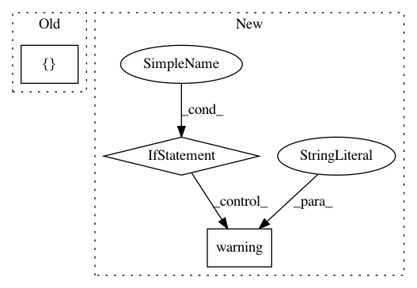

e6ef08f367e0389e811d63eaa5afb16183a19e2b,src/sdk/pynni/nni/compression/tensorflow/compressor.py,,_locate_layers,#Any#Any#,240
Before Change
if isinstance(value, tf.keras.Model):
ret.update(_locate_layers(value, cur_path + [key]))
elif isinstance(value, list):
ret.update(_locate_layers(value, cur_path + [key]))
elif isinstance(value, tf.keras.layers.Layer):
ret[id(value)] = LayerInfo(value, cur_path + [key])
After Change
// `cur_path`s format is documented in `LayerInfo.path`.
// TODO: it can only find layers in `Model` and `list` for now.
assert isinstance(model, tf.keras.Model)
if isinstance(model, tf.keras.Sequential):
_logger.warning("`Sequential` model is not supported yet, ignored.")
ret = {}
for key, value in model.__dict__.items():
if isinstance(value, tf.keras.Model):
ret.update(_locate_layers(value, cur_path + [key]))
In pattern: SUPERPATTERN
Frequency: 4
Non-data size: 3
Instances
Project Name: microsoft/nni
Commit Name: e6ef08f367e0389e811d63eaa5afb16183a19e2b
Time: 2020-08-24
Author: 40699903+liuzhe-lz@users.noreply.github.com
File Name: src/sdk/pynni/nni/compression/tensorflow/compressor.py
Class Name:
Method Name: _locate_layers
Project Name: uber/ludwig
Commit Name: 3e2f276459f976054b5c2ab8c55be994170345da
Time: 2020-08-27
Author: carlo.grisetti@dsgroup.it
File Name: ludwig/utils/defaults.py
Class Name:
Method Name: merge_with_defaults
Project Name: catalyst-team/catalyst
Commit Name: d53d6cf92b649fb18138c1ac6a4c6d803aa801c3
Time: 2020-02-10
Author: scitator@gmail.com
File Name: catalyst/contrib/__main__.py
Class Name:
Method Name:
Project Name: ray-project/ray
Commit Name: d5a7c53908018c72a663859990db016d86a4ac5e
Time: 2020-09-15
Author: amogkam@users.noreply.github.com
File Name: python/ray/util/sgd/torch/torch_trainer.py
Class Name: TorchTrainer
Method Name: __init__